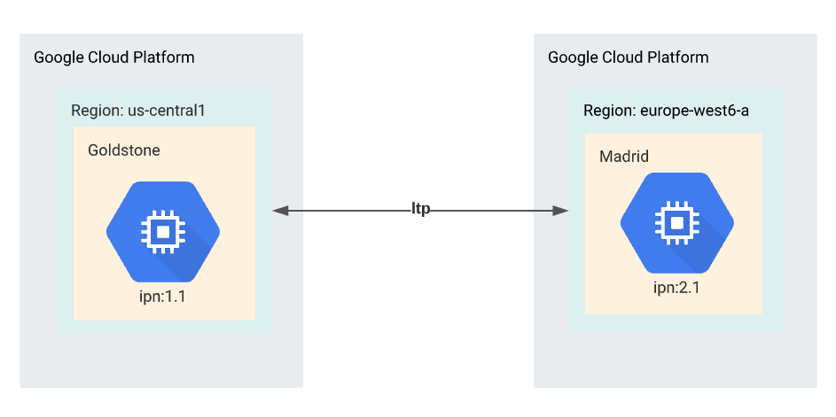
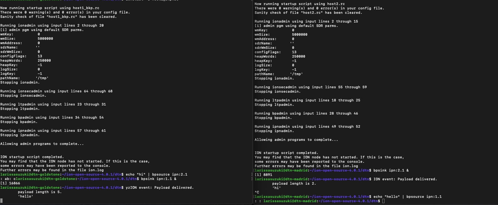

Running DTN on Cloud VM using a Two-Node Ring
This project has been developed by Dr Lara Suzuki, a Visiting Researcher at NASA JPL.
Introduction
In this project we demonstrate how to run DTN on two nodes on Cloud VM using NASA's implementation of the bundle protocol - ION.
 Two-Node Topology
The ION (interplanetary overlay network) software is a suite of communication protocol implementations designed to support mission operation communications across an end-to-end interplanetary network, which might include on-board (flight) subnets, in-situ planetary or lunar networks, proximity links, deep space links, and terrestrial internets.
DTN on Cloud Linux VMs 101
We strongly recommend that you firstly get familiar with the Loopback communication of ION running on a single node on Google Cloud Platform.
Getting Started with Two Linux Cloud VMs
On your preferred Cloud provider dashboard, create a Linux VM instance (e.g. for instance Debian). In this tutorial we have created one instance named Golstone in Zone: us-central1 and the another instance named Madrid in Zone: europe-west2-c. The diagram below illustrates the two node communication that we will be developing in this tutorial.
The configuration files
In this section we will walk you through the creation of the host1.rc file. Follow the same steps to create the same file for host2.rc.
The ionadmin configuration
The ionadmin configuration assigns an identity (node number) to the node, optionally configures the resources that will be made available to the node, and specifies contact bandwidths and one-way transmission times.
## begin ionadmin
# Initialization command (command 1).
# Set this node to be node 1 (as in ipn:1).
# Use default sdr configuration (empty configuration file name '').
1 1 ''
# Start ion node
s
# Add a contact.
# It will start at +1 seconds from now, ending +3600 seconds from now.
# It will connect node 1 to itself.
# It will transmit 100000 bytes/second.
a contact +1 +3600 1 1 100000
# Add more contacts.
# The network goes 1--2
# Note that contacts are unidirectional, so order matters.
a contact +1 +3600 1 2 100000
a contact +1 +3600 2 1 100000
a contact +1 +3600 2 2 100000
# Add a range. This is the physical distance between nodes.
# It will start at +1 seconds from now, ending +3600 seconds from now.
# It will connect node 1 to itself.
# Data on the link is expected to take 1 second to reach the other
# end (One Way Light Time).
a range +1 +3600 1 1 1
# Add more ranges.
# We will assume every range is one second.
# Note that ranges cover both directions, so you
#only need define one range for any combination of nodes.
a range +1 +3600 1 2 1
a range +1 +3600 2 2 1
# Set this node to consume and produce a mean of 1000000 bytes/second.
m production 1000000
m consumption 1000000
## end ionadmin
The ltpadmin configuration
The ltpadmin configuration specifies spans, transmission speeds, and resources for the Licklider Transfer Protocol convergence layer
# Initialization command (command 1).
1 32
# Add a span. (a connection)
a span 1 10 10 1400 10000 1 'udplso `external_IP_of_node_1`:1113'
# Add another span. (to host2)
# Identify the span as engine number 2.
# Use the command 'udplso 10.1.1.2:1113' to implement the link itself.
a span 2 10 10 1400 10000 1 'udplso `external_IP_of_node_2`:1113'
# Start command.
# This command actually runs the link service output commands.
# It also starts the link service INPUT task 'udplsi `internal_IP_of_node_1`:1113'
# to listen locally on UDP port 1113 for incoming LTP traffic.
s 'udplsi `internal_IP_of_node_1`:1113'
## end ltpadmin
The bpadmin configuration
The bpadmin configuration specifies all of the open endpoints for delivery on your local end and specifies which convergence layer protocol(s) you intend to use.
## begin bpadmin
# Initialization command (command 1).
1
# Add an EID scheme.
# The scheme's name is ipn.
# This scheme's forwarding engine is handled by the program 'ipnfw.'
# This scheme's administration program (acting as the custodian
# daemon) is 'ipnadminep.'
a scheme ipn 'ipnfw' 'ipnadminep'
# Add endpoints.
# Establish endpoints ipn:1.0, ipn:1.1, and ipn:1.2 on the local node.
# ipn:1.0 is expected for custodian traffic. The rest are usually
# used for specific applications (such as bpsink).
# The behavior for receiving a bundle when there is no application
# currently accepting bundles, is to queue them 'q', as opposed to
# immediately and silently discarding them (use 'x' instead of 'q' to
# discard).
a endpoint ipn:1.0 q
a endpoint ipn:1.1 q
a endpoint ipn:1.2 q
# Add a protocol.
# Add the protocol named ltp.
# Estimate transmission capacity assuming 1400 bytes of each frame (in
# this case, udp on ethernet) for payload, and 100 bytes for overhead.
a protocol ltp 1400 100
# Add an induct. (listen)
# Add an induct to accept bundles using the ltp protocol.
# The duct's name is 1 (this is for future changing/deletion of the
# induct).
# The induct itself is implemented by the 'ltpcli' command.
a induct ltp 1 ltpcli
# Add an outduct (send to yourself).
# Add an outduct to send bundles using the ltp protocol.
a outduct ltp 1 ltpclo
# Add an outduct. (send to host2)
# Add an outduct to send bundles using the ltp protocol.
a outduct ltp 2 ltpclo
# Start bundle protocol engine, also running all of the induct, outduct,
# and administration programs defined above
s
## end bpadmin
The ipnadmin configuration
The ipnadmin configuration maps endpoints at "neighboring" (topologically adjacent, directly reachable) nodes to convergence-layer addresses.
## begin ipnadmin
# ipnrc configuration file for host1 in a 3node ltp/tcp test.
# Essentially, this is the IPN scheme's routing table.
# Add an egress plan.
# Bundles to be transmitted to node number 1 (that is, yourself).
# The plan is to queue for transmission on protocol 'ltp' using
# the outduct identified as '1.'
a plan 1 ltp/1
# Add other egress plans.
# Bundles for elemetn 2 can be transmitted directly to host2 using
# ltp outduct identified as '2.'
a plan 2 ltp/2
## end ipnadmin
The ionsecadmin configuration
The ionsecadmin enables bundle security (also avoid error messages in ion.log).
## begin ionsecadmin
# Enable bundle security and avoid error messages in ion.log
1
## end ionsecadmin
Executing the configuration files
On the terminal of host 1 execute the command
host 2 execute the command
To send a message from host 1 to host 2, you must firstly start bpsink in host 2 by executing the command below
On the terminal of host 1, enter the following command and hit enter
After the execution of the command above you should see in the terminal of host 2 the following message
The image below illustrates the above scenario plus host 2 sending a hello message to host 1.
